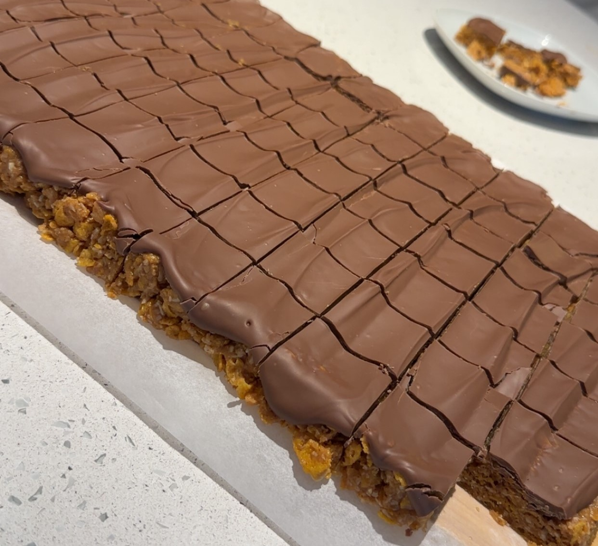

Gudomliga snickersrutor!
Här har ni något riktigt gott som är perfekta att frysa in och ta fram när man får besök. Nötiga, sega och fulla av crunch och cholkad. Himmelriket? Ja, jag anser nog det.
Detta recept avser cirka 50 bitar. En go fikastund helt enkelt.

Ingridienser:
- Jordnötssmör med bitar (crunchy) 350 g
- Strösocker 1 dl
- Ljus sirap 2.5 dl
- Vaniljsocker 2 tsk
- Cornflakes 10 dl
- Kokos 2 dl
Till garnering:
- Choklad 200 g
Tips och tricks:
- Förvaras i en burk med lock - bakplåtspapper mellan lagren
- Håller i två månader i kylskåp
- Går bra att frysa
Gör så här:
- 1. Klä en form (20×30 cm) med bakpapper.
- 2. Rör ihop jordnötssmör, strösocker, sirap och vaniljsocker i en kastrull. Låt sjuda i ett par minuter
- 3. Krossa Cornflakesen i en bunke för sig.
- 4. Rör ner cornflakes och kokos i kastrullen och arbeta ihop en klibbig massa.
- 5. Tryck ut smeten i formen och ställ in i kylskåpet i 30 minuter.
- 6. Medan kakan står i kylskåpet så smälter du chokladen över ett vattenbad på låg värme.
- 7. Bred sedan chokladen över kakan och in i kylskåpet ytterligare en timme innan du skär dem i små rutor.